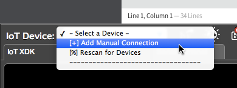
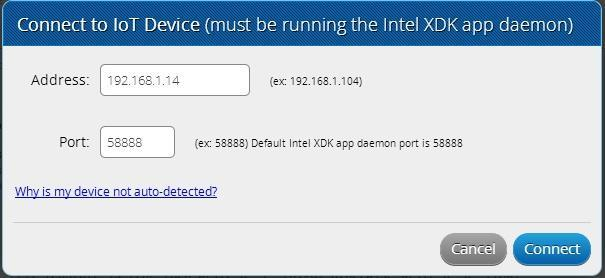

Troubleshooting - Intel® XDK
Some common issues have been listed below. For additional troubleshooting and FAQ, visit software.intel.com/en-us/articles/intel-xdk-iot-edition-troubleshooting-and-faq.
Don’t see your device in the “IoT Device” drop down list?
Add a device manually
You will need to add the IP address of your IoT device manually if you are using:
- Ethernet over USB for the Intel® Edison,
- a direct ethernet connection for the Intel® Galileo, or
- an internet network that requires additional login credentials (e.g. a university Wi-Fi network)
-
From the “IoT Device” drop down list, select “Add Manual Connection”.

-
For “Address”, enter the IP address of your board.
For “Port”, leave as the default “58888”.

Don’t know the IP address?
Refer to:
- Connect Your Intel Edison to Wi-Fi → Identify the IP address.
- Or use 192.168.2.15 if you’re using Ethernet over USB.
-
Click “Connect” to try connecting to the IoT device using the manual settings.
Restart the Intel XDK app daemon
The Intel® XDK app daemon may not be running on the Intel® IoT board.
-
Establish a serial connection to your Intel® Galileo or Intel® Edison.
Don’t know how? Refer to Shell Access.
-
Use the
systemctlcommand to enable and restart the xdk-daemon on the IoT board.systemctl enable xdk-daemon systemctl restart xdk-daemon -
Re-check the “IoT Device” drop down list for your device.
Additional resources
For additional help using the Intel® XDK, explore the articles or videos listed below.